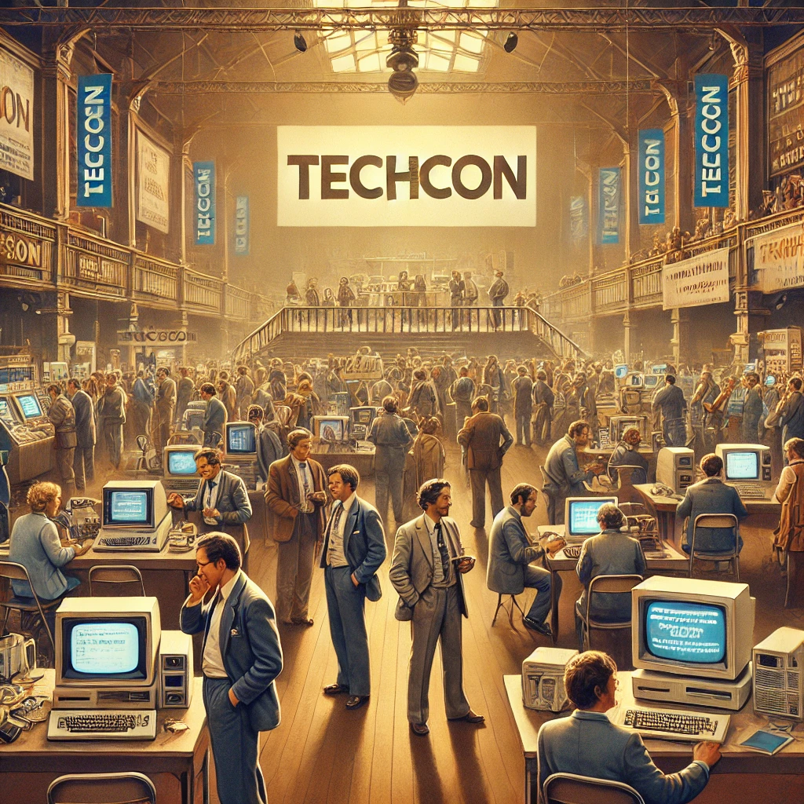
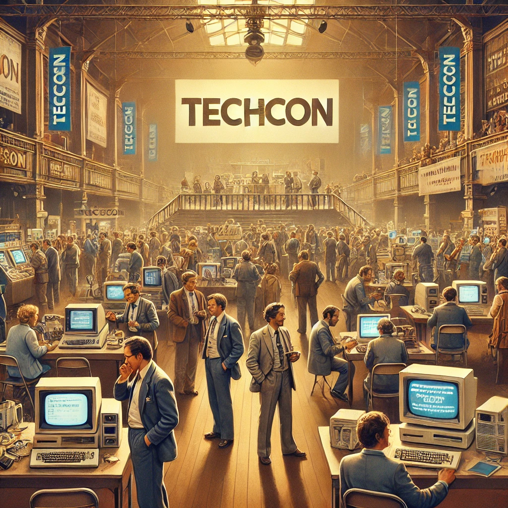

History
TechCon began in 2010 as a small gathering of tech enthusiasts and has since grown into one of the largest tech conferences in the world.
TechCon began in 2010 as a small gathering of tech enthusiasts and has since grown into one of the largest tech conferences in the world.
TechCon is dedicated to fostering innovation and collaboration in the tech community. Our mission is to connect people and ideas, shaping the future of technology.